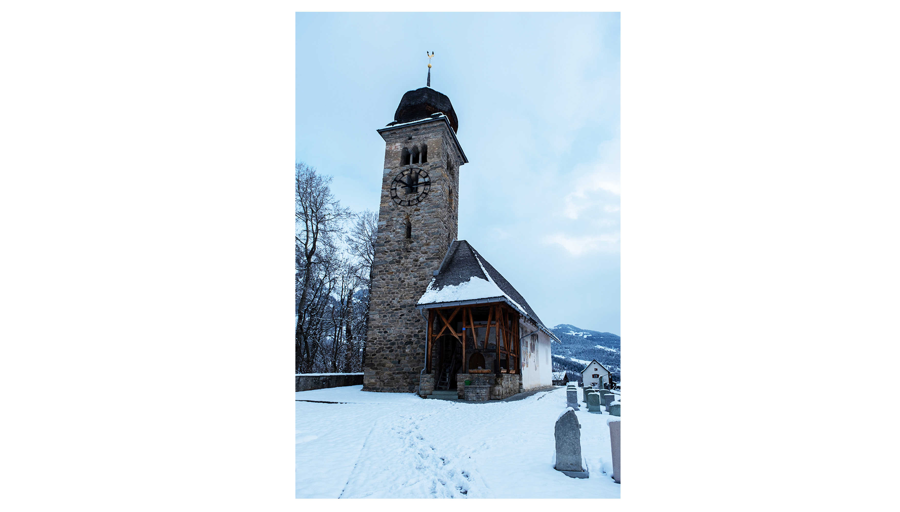
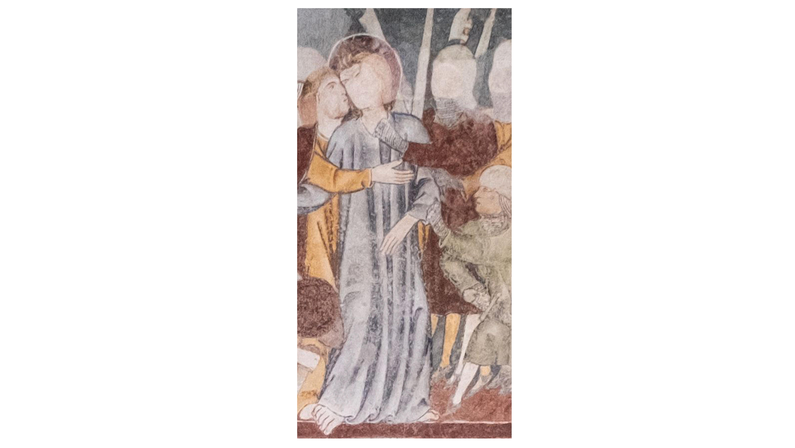
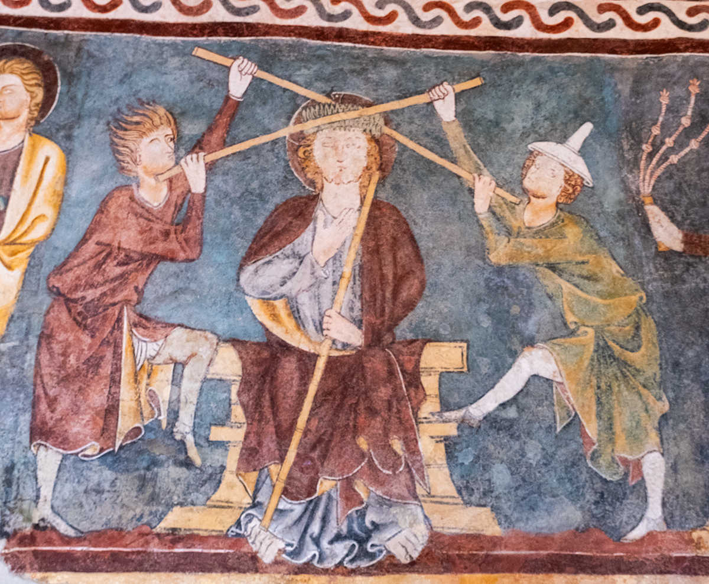

Wahrscheinlich ist manchen Kunstbeflissenen schon einmal aufgefallen, dass die Füsse Jesu und der Heiligen im Mittelalter vielfach nackt und unbeschuht dargestellt werden. Sogar in der Bergwelt Graubündens finden sich in der Surselva, näherhin im Bergdorf Waltensburg/Vuorz, barfüssig gezeichnete Figuren aus einer fernen Zeit. Waltensburg ist eine vormals reformierte Enklave auf ca. 1000 Meter Seehöhe. Mit dem Postautobus ist der Ort in unter 20 Minuten von Ilanz her zu erreichen. Auf einem Fresko (Wandmalerei) im Inneren des Kirchenraums finden sich faszinierende Bilderwelten. Dass im Rahmen der bekannten Bilderskepsis der Reformation Löschkalk auf den uns interessierenden Bilderzyklus mit faszinierender Figurensprache aufgetragen wurde, liess die Bilder zwar bis in die 1930er Jahre ‹verschwinden›, für uns heutige aber in erfreulicher Weise konserviert erhalten. Das nennt man Ironie der Geschichte, dass jene etwas erhalten, die es zum Verschwinden bringen wollten.
Die Kirche von Waltensburg/Vuorz im Winter, mit Fussspuren im Schnee. An der inneren Nordwand findet sich der hochmittelalterliche Passionszyklus (um 1330). (Bild: Noemi Neuhold)
Ein grossartiger Passionszyklus auf zwei Ebenen (Register) kam bei der Renovation beziehungsweise Wiederinstandsetzung vor 100 Jahren zum Vorschein. In seiner Vielschichtigkeit und Feinsinnigkeit ist er wohl ein theologisch bedeutsamer Ort der Schweiz. Das Opus spiegelt hochmittelalterliche Spiritualität, es atmet ehrwürdige Geschichte und bietet eine tiefgründige, anthropologisch fest verankerte Erzählung. Im erhabenen Zyklus sind die Füsse einiger Protagonisten in auffälliger Weise nackt dargestellt. Verletzlich und entblösst treten sie uns entgegen. Wohlgeformt ragen sodann die Zehen an manchen Stellen unter langen Gewändern über die gelegten Bilderrahmen – so wie bei der Darstellung des Verrats und der Gefangennahme Jesu.
Judaskuss und Gefangennahme Jesu sowie der Aspekt des ‹herausragenden Fusses›. (Bild: Noemi Neuhold)
Nun zu einigen Fragen, die einem da vor dem Bilderreigen, stehend oder
sitzend, umtreiben könnten: Warum nur werden an dieser Stelle ‹heilige›
Personen und zuvorderst der Heiland selbst ohne Schuhwerk dargestellt?
Ist es nicht seltsam, dass diese Körperteile einen derart ‹blank und
rein› auf einer Meereshöhe knapp über 1000 Metern entgegentreten, wo man
sich wohl besser einen Grossteil des Jahres um gutes Schuhwerk kümmert?
Die in Waltensburg dargestellte und didaktisch eindrücklich vermittelte
Passionserzählung rekurriert auf einen biblischen Fundort. Sie
entwickelt ihn aber zugleich weiter und noch wichtiger: deutet ihn in
eigener, kreativer Weise aus. Bekanntlich liefern die Evangelisten auch
je unterschiedlich akzentuierte Narrationen zu den letzten Stationen im
Leben des Jesus von Nazareth.
Nacktheit, Ausgeliefert-Sein und Heiligkeit
Nackte Füsse kommen in den Evangelien nicht direkt zur Sprache. Dass
aber «nackt dem nackten Christus» (nudus nudum Christum sequere)
nachgefolgt werden möge, war im Hochmittelalter eine Motivationskraft
sondergleichen. Denken wir nur an den Poverello, Franz von Assisi
(1181/82–1226), der sich vor seinem Vater entkleidete. Der Mensch und
sein Körper wird entdeckt und akzentuiert, nicht die Macht. In einer
durchaus ‹dunklen› Zeit entstehen jene Fresken des so genannten
Waltensburger Meisters. Die Pest, die Mitte des 14. Jahrhunderts
grassierte und ein Drittel der (Stadt-)Bevölkerung wie in einem
Pfeilhagel hinwegraffte, verdunkelte die Zeit. Bei der Nacktheit und
Schutzlosigkeit (auch gegen Infektionskrankheiten) handelt es sich um
ein biblisches Moment, das immer wieder neu erfahren werden kann.
Daneben stand ein wirtschaftlicher Aufschwung, der aber viele zu Armen
und Elenden werden liess. Die kraftvollen Armutsbewegungen des
christlich-abendländischen Mittelalters bespielten diese Klaviatur,
literarisch, meditativ, bildlich und im konkreten Leben von
Frömmigkeitsübungen stehend – stets aber auch demonstrativ und
appellativ! Waren die Künstler von Ideen der Armutsbewegung auch
explizit oder implizit beeinflusst?
Die Darstellung nackter Füsse wollte sehr wohl ansprechen, verstören und
regte womöglich sogar zur Verehrung an. Denn der menschgewordene Gott
Jesus Christus wurde nicht nur geboren und starb einen grausamen
Foltertod (mors turpissima crucis), sondern er stand mit beiden
Beinen fest in der Welt, ja auf der Erde. Er war Mensch wie wir und ging
durch diese Welt. Diese Füsse des Erlösers verdienen also Beachtung und
Verehrung. Das war wohl auch ein ‹Programmpunkt› der in Waltensburg
tätigen Künstlerwerkstatt und natürlich der Auftraggeber, die die
Ausmalung bezahlten: Der Betrachter und die Betrachterin sollten
angesprochen werden! Künstler jener Zeit waren keine Individualisten,
sondern arbeiteten oft mit Schablonen. Wollen die nackten Zehen, welche
die geometrischen Formgebungen sprengen, konkrete Ansatz- und
Ausgangspunkte solcher Verehrung sein? Ich vermute es. Die Kunst wollte
und will nicht nur ansprechen, sondern etwas bewirken.
Ausschnitt Fusswaschung: Neben dem gedeckten Tisch wäscht der Herr des Mahles die Füsse des Petrus. Auch die Apostel geben ihre nackten Zehen preis. (Bild: Noemi Neuhold)
Ein besonders mächtiges ‹Bild› stellt die Fusswaschungsszene bereit: Abendmahl und Fusswaschung, so wie sie in Johannes 13 geschildert werden, sind starke christliche Symbolhandlungen: Der Meister wäscht seinen Schülern diejenigen Körperteile, die meist zuletzt das Licht der Erde erblicken und als Verbindungsglieder Kontaktstellen zum Erdigen bieten. Der Boden ist aber zugleich oft schmutzig oder staubig. Deutlich ist im Passionszyklus des Waltensburger Meisters zu sehen, wie Petrus sich sträubt. Er möchte nicht gewaschen werden. Der ‹Apostelfürst› will nicht, was ihm geschieht, obwohl er sein Gewand dann doch schüchtern nach oben zieht. Mit einigem Nachdruck versucht Petrus, die auf ihn zukommende Handlung abzuwenden. Jesus als gebeugter Hauptakteur des Geschehens ist unbeschuht wie Petrus. Die nackten Füsse zeigen das Gereinigte und Heilige in der Umkehrung der Verhältnisse an: Denn nicht der Sklave wäscht die Füsse, sondern Jesus (der selbst wiederum wie ein Sklave barfüssig inszeniert ist). Jesu erweist sich als Dienst-Leister!
Schuhe und Kritik im Hochmittelalter
In einem bestimmten Umkehrschluss heisst das in der Logik des Bildprogramms auch, dass die, welche das rettende Heilige ablehnen, konsequenterweise Schuhe tragen müssen. Es gibt in der Darstellung eine Polemik den Schuhen gegenüber, die nicht unschuldig ist! Schuhe sind im 14. Jahrhundert umstritten, denn viele sind arm (gewollt wie Franziskus oder ungewollt wie die Mehrheit der Bevölkerung). Wenn man tiefer gräbt, könnte, gewagt vielleicht, in der Darstellung ein antijudaistischer Anflug ausgemacht werden. Sind freilich die allermeisten Figuren wie Jesu selbst ethnisch oder besser von ihrer Herkunft her gesehen in der erzählten Welt ‹jüdisch›, so zeigt sich – neben den bekannt stigmatisierenden Judenhüten – eine klare Abgrenzung selbst im podologischen Programm. Heute würden wir von Exklusion sprechen. Die zwei Kerle beispielsweise, welche Jesus gewalttätig die Dornenkrone ums Haupt winden, tragen elegante Schuhe, sie stemmen sich gegen das Heil(ige), verzerren es. Aus zarten, zierlichen Riemen ist unter anderem ihr Schuhwerk gefertigt. Der eine hatte flammiges Haar, der andere einen Judenhut (pileus cornutus) auf dem Kopf.
Ausschnitt Geisselung und Dornenkrönung. Die Gegner Jesu, dessen ungestümen Folterknechte, sind am Werk; der ‹gekrönte Herrscher› seinerseits weist ausladende, breite nackte Füsse auf, auf dem rechten Fuss ruht sein Herrscherstab. (Bild: Noemi Neuhold)
Und heute…?
650 Jahre nach der Anbringung des Bildprogramms stehen wir vielleicht angetan, womöglich auch beeindruckt, aber unter Umständen verwirrt und orientierungslos vor der nördlichen Bilderwand im Innenraum der Waltensburger Kirche. Irgendwie ist es uns eine fremde Welt, in die wir eintauchen (können). Sie ist voller Symbolik, gespiegelter Praktiken, zudem von Empfindsamkeit und Gewalt. Wohl alle praktizieren dieses Eintauchen in unterschiedlicher Weise, jedenfalls aber doch vor Ort in beschuhtem Zustand. Denn kaum einer betritt (im Unterschied zu einer Moschee) eine Kirche mit entblössten Zehen. Wir leben seit der Mitte des 20. Jahrhundert in einer Wohlstandsgesellschaft, in der Schuhe immense ästhetische und kommerzielle Bedeutung haben. Wie sollen wir heute mit dem Bildprogramm des Waltensburger Meisters umgehen? Sollen wir es Geschichte oder l’art pour l’art sein lassen? Die Fragen können nicht allgemein beantwortet werden. Moralin ist in solchen Fragen dann auch nicht weit. Wenn diese Kunst nur ein wenig zu verstören und zum Nachdenken anzuregen vermag, dann ist selbst heute neben Nike und Adidas noch die performative Kraft dieses spirituellen Bild-Alphabets wirkmächtig. Die Bildwelt könnte also inspirativ wirken: Gott ist ein Mensch mit zwei Füssen geworden, nicht abgehoben oder schwebend, sondern konkret und geerdet. Die nackten Füsse sind so ein Zeichen der verehrten und ‹heiligen› Inkarnation.
David Neuhold ist Professor für Kirchengeschichte an der Theologischen Hochschule Chur und mit HS 2024 Professor für Kirchengeschichte in Luzern.
Weitere Artikel von {{ author.author }} finden Sie hier:
Zur Vertiefung:
- Bolliger, Daniel: «Der Waltensburger Passionszyklus und die zeitgenössische Meditationsliteratur», in: Jahrbuch der Historischen Gesellschaft Graubündens 146 (2016), 9–56.
- Diethelm, Annegret: «Die Beredsamkeit stummer Bilder. Auf den Spuren eines mittelalterlichen Alphabets der menschlichen Gestalt», in: Horst F. Rupp (Hg.), Der Waltensburger Meister in seiner Zeit, Lindenberg i. Allgäu 2015, 128–140.
- Heinz-Mohr, Gerd: Lexikon der Symbole. Bilder und Zeichen der christlichen Kunst, Düsseldorf 61981, 113–114.
- Raimann, Alfons: Gotische Wandmalereien in Graubünden. Die Werke des 14. Jahrhunderts im nördlichen Teil Graubündens und im Engadin, mit Aufnahmen von Wolfgang Roelli, Disentis 21985.